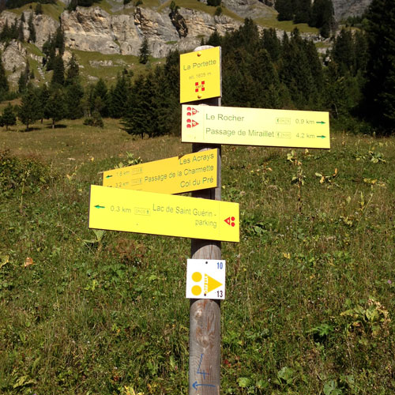

Josephine et Thibaut

Climat
Arêches est un charmant village du beaufortain situer a 900m d'altitude, la céremonie et la réception sont a 1500m d'altitude et on lieu à l'exterieur. Nous éspérons les meilleurs conditions à la fin juin,mais la tempérarture varie entre 5 et 25 degrés celcius en été, nous vous recommendons donc de prevoir des vétements chaud et de la crême solaire. Voici un lien vers les moyennes météo à Arêches en juin.

Randonnées et activités
La randonnée est la meilleure activité pour découvrir la magie du Beaufortain!
Clicker ici pour en savoir plus.
Nous adorons randonner le long du tour du beaufortain et au Lac des Tempêtes.
Si vous allez à l'office du tourisme d'Arêches, Ils pourrons vous donner plus d'informations sur les randonnées dans la région.
Il y a beaucoup de boutiques de location à Arêches ou vous pouvez louer vélos, materiel d'escalade, etc...
FROMAGE!!!!
La region du beaufortain est mondialement connu pour son fromage. Le lait est protégé, ce qui premet de preserver les traditions et les modes de vies des fermiers de la région, l'heritage culturel, et les paturages.
Nous vous invitons à visiter la cooperative de Beaufort, http://www.cooperative-de-beaufort.com/
Vous etes perdu?
N'hesiter pas a nous contacter si vous avez des questions à propos comment se vetir, ou faire des randonnés ou trouver des activités. Nous serons ravi de vous aider!
josephine.arader@gmail.com
tdelille@gmail.com